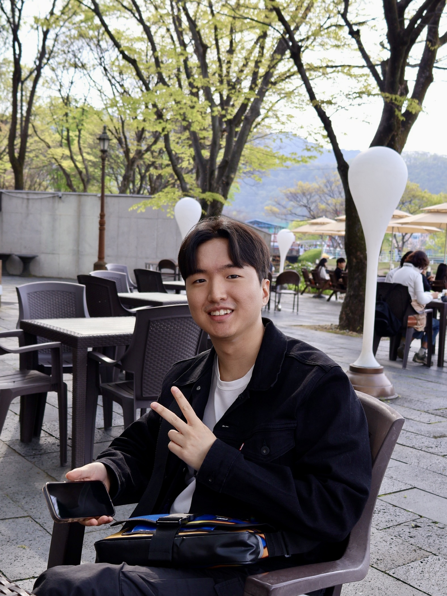

// EECS — UC Berkeley — Class of '27
Juhyun Do
Designing and building energy-efficient, performant chips — from RISC-V processor and VLA accelerators to PCIe Fabric Switch
Hi, I'm Juhyun — rising senior at UC Berkeley studying Electrical Engineering & Computer Science.
Ever since reading Chip War and having fun working on CS61CPU project, I've been interested in learning more about how chips are designed and how to make them more efficient, with my background interests in energy. At Berkeley, I've taken classes like Tapeout IC Design Project - 16nm SoC (EE 194), Computer Architecture (CS 152), Advanced Digial Design and Integrated Circuits (EECS 251B), Digital Design and Integrated Circuits (151), ASIC lab (151LA), Intro to Machine Learning (CS 189), Optimization Models in Engineering (EECS 127), and Great Ideas of Computer Architecture (CS 61C).
I'm excited to see where my love for learning — and for making an impact — takes me next.

- FOCUS
- Hardware accelerators
- TOOLS
- Verilog · VCS · Genus · Innovus
- LANGS
- Korean · English · French
- OFF-HOURS
- Books · ping-pong · running · cooking
-
Digital Design Engineer Intern
- Optimizing the design of flagship Scorpio PCIe Switch Series
- Refined Design Infrastructure and Regression Runs By Parallelizing Partition Runs Within a Design Block -
Undergraduate Researcher
Improving dependency management in Hammer PD framework. Showcased in ISCA 2026 Workshop.
-
Research Intern
Learn about EDA algorithms, solved a two layer routing problem using A* algorithm and approximation of Steiner tree, reducing total HPWL by 27.6% while improving runtime by 3 folds compared to naiive solution of routing through each node.
In my free time, you'll find me reading, playing ping-pong, running, cooking, or watching the sun set!
I'd love to connect!
Feel free to reach me out on: